数字电子技术基础
按知识依赖重组 · 配有概念、推导与讲解型例题
版本：2026-11-19-daily-02 · 扩充修订阅读版
历史图片未重读的细节不作为已核实原题
本册目录
1. 数字信号与开关控制
水箱液位可以连续升降，而“液位是否超过警戒线”只有两种判断结果。前者是连续量，后者已经经过一次离散化。同样，电路中的电压本身可以连续变化，但数字电路把某些电压范围解释为逻辑零，另一些范围解释为逻辑一。数字技术研究的是这些离散状态如何表示信息、怎样运算，以及怎样通过实际器件可靠地传递和保存。
逻辑一不等于一伏，逻辑零也不要求恰好零伏。输入低电平的上限记为 ，高电平的下限记为 ，二者之间是不能保证解释结果的区域。输出也有保证的高电平下限 和低电平上限 。把高电压解释为一的约定称为正逻辑；若采用负逻辑，电压状态与逻辑值的对应也会改变。本册使用正逻辑。
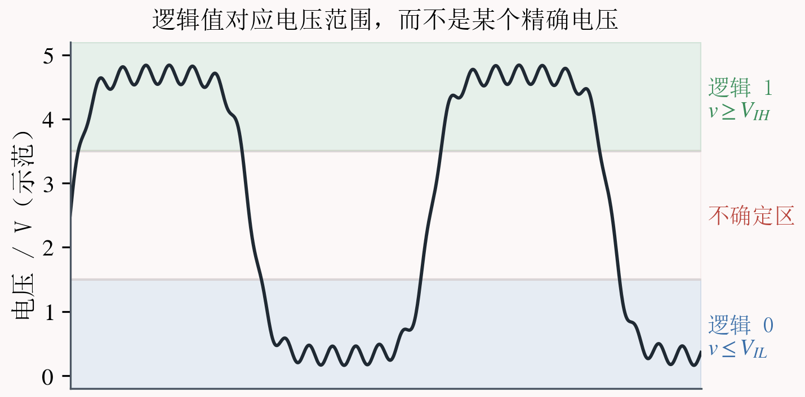
设一个假想器件保证输出高电平至少 、低电平至多 ，下级输入要求高电平至少 、低电平至多 。高、低电平噪声容限分别是
这些数值只服务于算例，不代表某个器件系列的实际规格。容限计算是在负载、供电等条件符合保证范围的前提下进行；真实连接应查看所用器件资料。输入悬空不是一个合法、稳定的逻辑状态，电压超出绝对最大额定范围也不能仅靠真值表判断后果。
现在考虑两个开关控制一盏灯。两个开关串联时，只有都闭合灯才亮；并联时，只要有一个闭合灯就亮。用一表示闭合与亮，用零表示断开与灭，就得到与、或两种逻辑关系。这一步把实际装置抽象为输入和输出的关系；以后同一关系可以由不同器件实现，而不必真的使用机械开关。
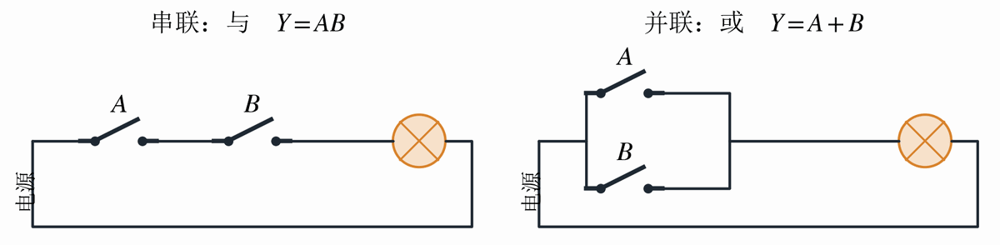
2. 位权数制
用三个二进制位可以表示八种不同状态。至于它们表示数字零到七、七个工作模式还是某几个字符，取决于编码规则。数制回答的是“怎样按位权表示数值”，编码回答的是“怎样把状态映射到信息”，二者不能混为一谈。
基数为 的位权表示为
小数点左边的权从一开始逐次乘基数，右边从 开始逐次除基数。例如
十进制整数转二进制时，连续除二所得余数依次是从最低位到最高位，因此要倒序读取。以四十五为例：先得到余数一，再得到零、一、一、零、一，倒读为 。检查位权和 ，可防止漏位。整数零必须单独输出一个零，不能因除法循环未执行而输出空串。
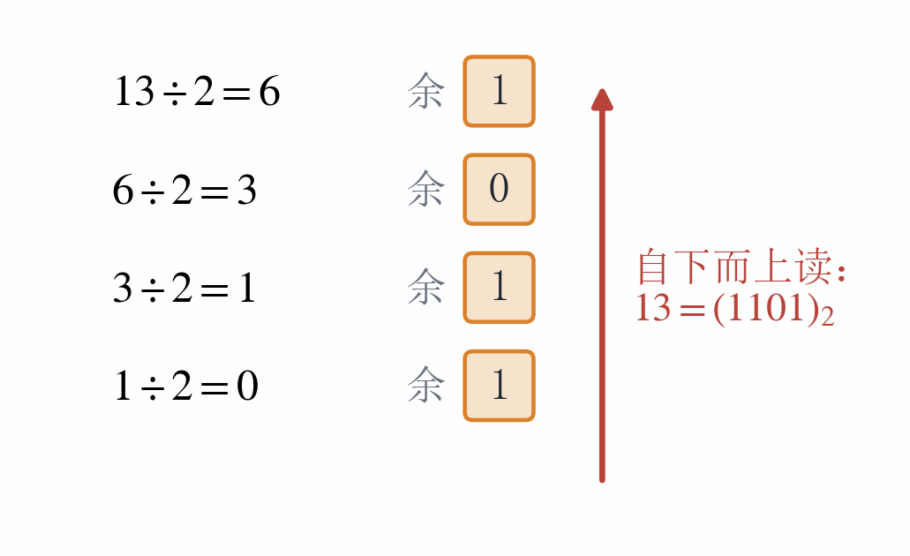
小数转换用乘基数取整数部分，所得次序从高位到低位。，取一并保留小数 ；再乘二得 ，取零；最后得一，所以 。不是所有十进制有限小数都能在二进制中有限表示，例如十分之一会产生循环展开。截断到有限位时应承认近似，不能用“计算机算错”解释表示误差。
八进制每位对应三位二进制，十六进制每位对应四位。分组从小数点向两侧进行，整数一侧在最高位补零，小数一侧在末尾补零。例如 。整数部分补成 ，小数部分补成 ，补零没有改变数值。十六进制的 A 到 F 分别表示十到十五，是一个数位；把余数十打印成字符串“10”会把一个数位变成两个字符，除非题目明确规定用空格分隔十进制数位值。
进制转换的方法归纳为：
- 任意进制转十进制：按位权展开求和。
- 十进制整数转 进制：反复除以 取余数，直到商为零，余数倒序排列。
- 十进制小数转 进制：反复乘以 取整数部分，顺序排列，到达要求的位数或小数部分为零时停止。
- 二进制与八进制、十六进制互转：从小数点向两侧每三位或四位分组，不足补零，每组换成一个数字；反向转换则把每个数字展开成三位或四位。
- 八进制与十六进制之间互转：先转成二进制作中介。
- 用位权和反算一遍，检查转换结果。
3. 编码与定长算术
四位自然二进制可表示零到十五，而四位八四二一编码只把零到九的十种组合用于一位十进制数字，其余六种组合无效。十进制二十五的自然二进制是 ，八四二一编码却是 。前者整体按二进制位权解释，后者分成两个十进制数位，不能相互替代。
两个八四二一码数字相加时，若四位和超过九，或相加时产生了向第五位的进位，结果就不是合法的十进制数位，需要再加六（）进行修正，并向高位产生进位。例如 ：，大于九，加 得 ，即十位一、个位二，正是十二。加六的原因是四位二进制逢十六进一，而十进制逢十进一，两者相差六。
字符编码又是另一层约定。字符“5”的编码不等于整数五的二进制表示；程序把字符转换成数值时，需要依据字符编码做映射。变量中有哪一串位，并不能单独决定它是整数、字符还是状态码，解释规则同样是信息的一部分。
为了在固定字长中表示负数，常用补码。 位补码的数值为
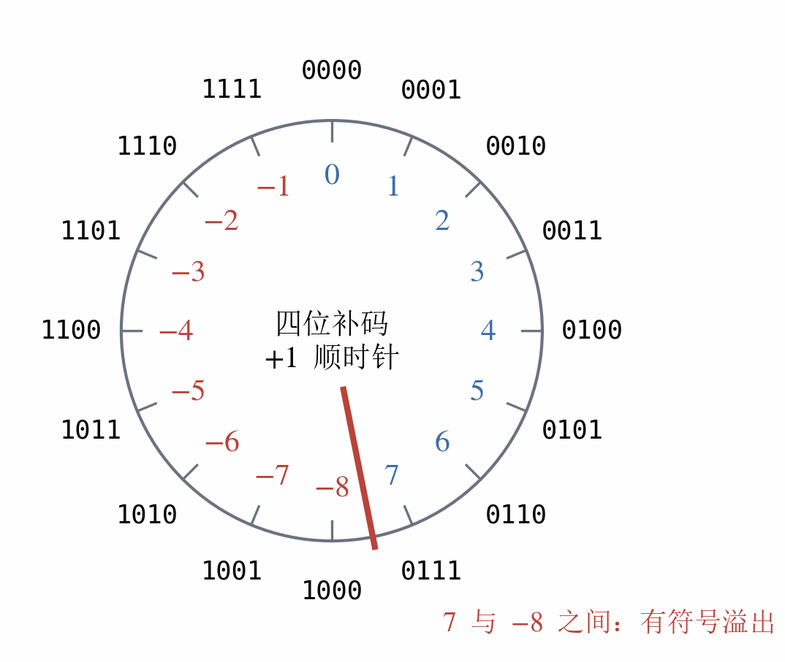
范围是 。求负数的位型可对正数按位取反后加一。例如八位的正五为 ，负五为 。将负五与正三相加，保留八位得到 ，按补码解释即为负二。最高位之外的进位丢弃，是固定字长模 运算的一部分。
表示有符号数的方法还有原码和反码，三者对比如下（ 位字长）：
- 原码：最高位为符号位，其余位为绝对值。范围 ，零有正零和负零两种表示。
- 反码：正数同原码，负数把正数的各位全部取反。范围与原码相同，同样有两个零。
- 补码：负数为反码加一，即 。范围 ，零只有一种表示，负数比正数多一个。
补码被普遍采用，是因为它让减法变成加法：，而 的补码就是 ，所以
加法器只需在 的每一位前加一个反相器，并把最低位进位输入置一，就能做减法，不必另设减法电路。例如八位 ：，丢弃最高位进位，结果为 ，即二。
进位与有符号溢出不是同一概念。八位补码中 ，数学上应为一百二十八，却被解释为负一百二十八，发生有符号溢出，即使没有最高位进位。相反，负一加一产生最高位进位，而保留的结果为零，没有有符号溢出。判断有符号加法溢出可看：两个同号操作数得到异号结果；不同符号相加不发生这一类溢出。
格雷码体现了“编码规则服务于使用目的”。自然二进制从三变四，要从 变成 ，三个位都需要改变。实际器件不可能严格同时变化，中间可能短暂出现其他组合。若用相邻编码只改变一位的格雷码表示连续位置，就能减轻多位不同步带来的读取歧义，但仍需处理接点抖动、异步采样等问题，不能声称从此没有误读。
三位自然二进制 可转换为反射格雷码：、、。例如自然二进制六为 ，转换为 。格雷码 不是按四、二、一位权解释的五，而是编码表中对应的六。逆转换依次用 、、，得到 。同一位串采用不同编码会表示不同含义，正如补码与无符号解释可以不同。
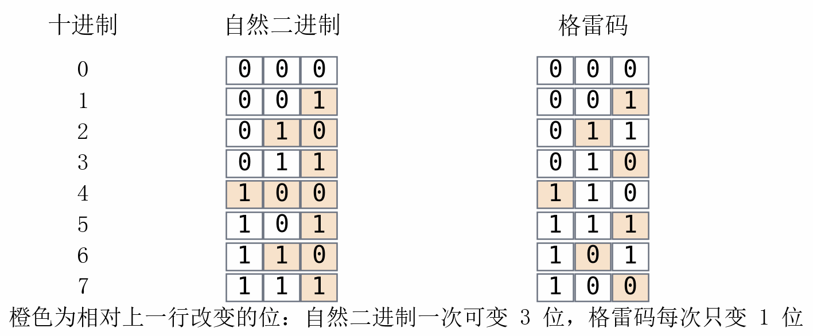
奇偶校验则给数据附加一个冗余位。若要求全部位中一的总数为偶数，校验位是数据位异或。例如数据 有三个一，校验位取一，传输五位 。接收端再次异或全部位，结果零表示满足偶校验，结果一说明出现可检测的不一致。偶数个位同时翻转可能不改变奇偶性，所以这种方法不能检出所有错误，更不能单靠一个校验位确定错误位置并纠正。它展示了冗余与可靠性的关系，却不是完整的纠错编码课程。
4. 基本逻辑运算与表达式
记 。与用 表示，只有 时为一；或用 表示，只要至少一个输入为一就为一；非用 表示，交换零与一。这里的加号是逻辑或，因此 ，并非算术加法的二。
异或 在两个输入不同时为一，可写为
同或是异或的反，两个输入相同时为一。与非 是先与后非，或非 是先或后非，括号和反相范围不能略读。将输入按 排列，与的输出依次为 ，或为 ，异或为 。这一有序列表就是二输入真值表的完整内容。
例如报警器在“门开且系统布防”时响，或“手动紧急按钮按下”时响。令门开为 、布防为 、紧急按钮为 ，输出是 。门开但未布防且没有紧急按钮时，代入 ，得零；按钮按下时，无论另外两项如何，输出均为一。先把语义准确变成条件，再写符号，能避免把“或者”误写成与。
同一张真值表可以用门图、公式或文字描述。门图中小圆圈通常表示反相，但必须连同整个门符号阅读。一个有反馈的逻辑网络还可能保存状态，此时仅列当前外部输入，未必足以确定输出，不能再把它当作普通组合函数。
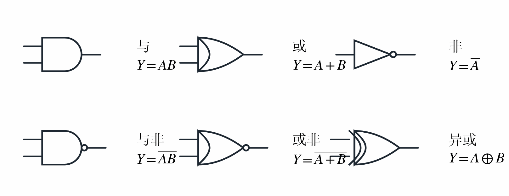
5. 布尔代数及其证明方式
布尔运算有幂等律 、，互补律 、。因此普通代数的直觉不能直接搬用： 不等于 ，逻辑或也没有像普通减法那样的逆运算。
吸收律 可以提取 ，写成 。它的意义是：只要条件 已经足够使输出为一，附加的“同时还要求 ”不会扩大输出为一的集合。另一条 是对偶形式。
德摩根定律为
第一式说“并非两者都成立”等于“至少一个不成立”；第二式说“并非至少一个成立”等于“两者都不成立”。反相穿过一层括号时，与、或必须互换，同时每个被作用项反相。仅给变量加横线而不交换运算，是常见错误来源。
考虑 。利用分配律 ，得到
也可以从 与 分别解释：前者输出为 ，后者输出恒为一，恰是或运算。这个证明还说明，为何不能把 中的 与 直接“约掉”：布尔代数里没有这一步普通分式式的消去规则。
逻辑代数的基本定律在《逻辑学》第 4 节已经完整列出，这里用电路中的写法补充两条在化简和设计中很有用的定理。第一条是冗余定理（也称一致性定理）：
证明：，前一项被 吸收，后一项被 吸收。它说明：当两项中一个含 、另一个含 时，由两项其余部分相与组成的项是多余的。第 10 节将看到，这个“多余”的项在动态行为上却可以消除冒险。第二条是香农展开定理：任何布尔函数都可以按某一个变量展开为
它说明一个多变量函数可以拆成两个少一个变量的函数，由 选择其中一个。第 7 节的数据选择器正是这个定理的电路实现。
再看 ，提取 后得到 。对稳定输入，原门网络与直接导线具有同一逻辑功能。但真实传播延迟不同，因此布尔等价不自动等于任何时刻的电压波形都相同。化简既有抽象层面的正确性，也有实际时序层面的限制。
6. 标准形式与函数完备性
一个含 个变量的最小项，把每个变量恰好出现一次并作与。对于指定输入，原变量在输入为一时出现，反变量在输入为零时出现，使该项只在这一行取一。例如输入 对应最小项 。把函数为一的所有行对应最小项相或，便得到主析取范式。
若 只在 和 时为一，则
这就是外层或、内层与的形式。俄语 ДНФ 是析取范式，СДНФ 是主析取范式。“主”要求每个最小项含全体变量；普通析取范式允许缺少部分变量。析取范式允许内部存在与，名字取自最外层连接，不表示只能使用或运算。
最大项与之相反：把各变量作或，使指定的一行取零。在 行取零的最大项是 。变量为一时写反变量，变量为零时写原变量。把所有输出为零的行对应最大项相与，得到主合取范式，俄语 СКНФ；普通合取范式简称 КНФ。最小项是找唯一的一行一，最大项是找唯一的一行零，因此二者写反变量的规则恰好相反。
为书写方便，把最小项按对应输入的二进制值编号：输入 对应 ，对应的最大项记为 。同一编号的最小项与最大项互为反：。于是一个函数可以简记为
两组编号合起来恰好是全部 到 。上例 只在 和 时为一，可写作 。函数的反 则由原来输出为零的那些最小项组成：。
范式是表达式结构，逻辑基是允许使用哪些运算的集合。只允许或和非时，仍可用 表达与，所以或、非构成完备基。某个式子属于析取范式，与它能否只用某个逻辑基改写，是不同问题。
仅用与非门也能构造全部基本运算。记 ，则
与非门能构造与、或、非，而这些运算能组成任意有限输入布尔函数，所以与非门自身构成完备基。“完备”指有足够多个这样的门可以实现任意函数，不是一个门就能承担所有功能。同样的论证可用于或非门。
7. 从逻辑要求到组合电路
设计一个三输入多数表决器，要求至少两个输入为一时通过。先按变量顺序列出八种输入；其中 对应输出一。因此主析取范式为
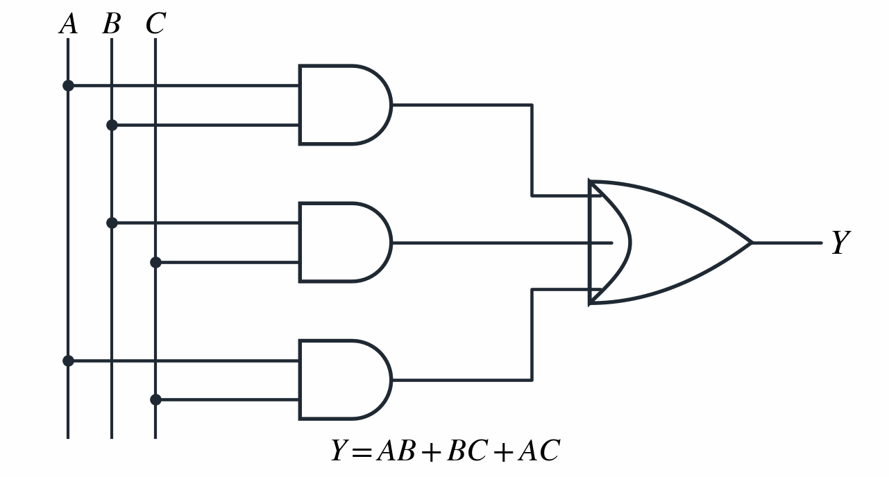
借助重复使用 和吸收关系，得到
具体做法是：，，，由于 （幂等律），同一项可以被重复使用三次。每一项表示某一对输入同为一，任意一对满足即通过。这一解释既说明式子为什么成立，也说明输出为一并不要求三者全为一。实现时可用三个二输入与门接一个或门，也可按德摩根律改成两级与非结构。门数、输入端数和逻辑级数取决于现有器件，最少文字数不一定意味着最省芯片。
设计组合电路的一般步骤是：
- 分析文字要求，确定输入变量和输出变量，规定每个变量取一和取零的含义。
- 列出真值表，覆盖全部 种输入；不会出现的输入标为无关项。
- 由真值表写出主析取范式（或主合取范式）。
- 用代数法或卡诺图化简，得到最简表达式。
- 按现有器件改写表达式，例如用德摩根律化成与非—与非形式。
- 画出电路图，并任选几组输入代入电路验证输出。
分析一个已有的组合电路则按相反方向进行：从输入开始逐级写出每个门的输出表达式，化简得到总的表达式，列出真值表，最后用文字说明电路的功能。
组合电路的分析从输入沿连接方向逐级写中间变量。例如先有 、，再由与非门得到 ，则 。遇到图中有反相圆圈，应先保留完整括号，再做代数变换；直接凭图形印象跳到结果容易漏反相。
数据选择器是把“由选择条件决定哪路数据通过”做成电路。二选一选择器满足
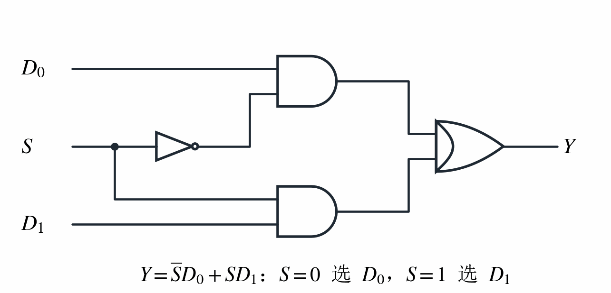
当 时，第二项消失，输出 ；当 时，第一项消失，输出 。这一展开也能实现一般布尔函数。比如 ，把 接选择端、 接零路、 接一路，就得到同一函数。选择器不需要知道数据代表数字还是控制位，它只执行连接条件。
译码器则把 位编码变为至多 条互斥的输出选择线。二位正逻辑译码可输出 。真实芯片可能采用低电平有效，届时“被选中”对应零而非一，必须阅读有效电平标记，不能照搬正逻辑输出式。译码器的每条输出恰好是一个最小项，所以 线到 线译码器加一个或门，就能实现任意 变量函数：把函数中出现的最小项对应的输出线接到或门即可。编码器做相反的工作，把多条输入线中有效的那一条转换成二进制编号；若可能有多条同时有效，需要用优先编码器规定谁优先。
数值比较器判断两个数的大小。一位比较器的三个输出为
多位比较从最高位开始：最高位不相等时，它就决定结果；相等时再比较下一位。两个多位数相等，要求每一位都相等，即各位同或的结果相与。
8. 卡诺图与无关项
两个最小项如果只在一个变量上不同，可以消去这个变量，例如 。卡诺图把这种代数关系排成相邻格：行列采用格雷码顺序，如 ，而非普通二进制顺序，使相邻位置只改变一个变量。
三变量函数 ，编号按 的自然二进制值定义。四个编号对应 ，全部满足 ，而 可任意改变。它们组成四格组，因此 。若只圈其中两对，可能得到 ，仍正确却未充分化简。
圈组必须包含 格，形状是按图的首尾相邻关系构成的矩形。对角格不相邻；最左与最右、最上与最下可以相邻；必要的重叠允许，因为布尔或的幂等律使重复覆盖不改变函数。大组消去更多变量，但必须覆盖所有规定的一，且不能把规定的零圈进去。
无关项不是“不想算的项”，而是需求明确定义为输入不会出现或该输入下输出任意的组合。例如只处理合法八四二一编码的一位数字，十到十五的六种输入可以在特定设计任务中标为无关项。若系统实际上可能遇到非法编码并要求报警，它们就不是无关项。利用无关项化简时应说明输入有效范围，而不能化简后再假装函数在全部输入上都等价。
边界相邻可用具体最小项核对。四变量卡诺图中，取行变量 、列变量 ，两轴都按 排列。四个角分别对应 ，其中 改变而 保持，因此四角合组得到 。它们在纸上看起来分散，却在首尾相邻的排列中构成同一组。判断能否合组，应回到“只有若干变量可任意变化，其余变量保持”这一代数条件；凭纸上直线距离判断会漏掉边界组。
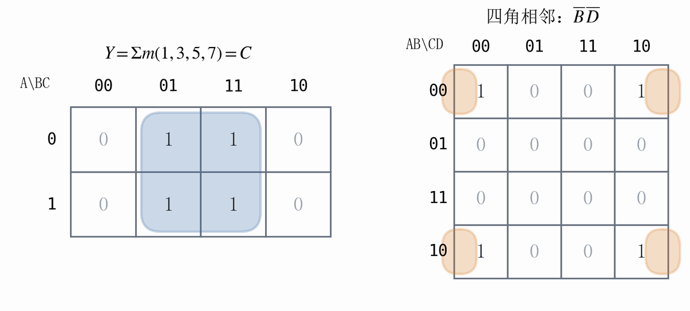
用卡诺图化简的步骤是：
- 按格雷码顺序画出卡诺图，在每个输出为一的格中填一，无关项填 ，其余为零。
- 先找出只能被一种方式圈入的一（孤立的一或只有一个相邻方向的一），优先把它们所在的最大可能组圈出。
- 用尽量大的矩形组覆盖剩下的一，组的格数必须是二的幂；无关项可圈可不圈，只在使组变大时使用。
- 每个一至少被圈一次，组的个数尽量少。
- 每个组写成一个与项：组内取值保持不变的变量保留（为一写原变量，为零写反变量），变化的变量消去。
- 把所有与项相或，得到最简与或式。
若要得到最简或与式，可以对零格作同样的圈组，写出 的最简与或式，再用德摩根律取反。
9. 加法器与多位运算
两个二进制位相加产生和位和进位。半加器满足 、。当两输入都为一时，算术和为二，二进制写作十，所以和位为零、进位为一；逻辑异或只给和位，并不包括进位。
全加器还要接收低位进位 。先以半加器求 、，再把 与 相加，得
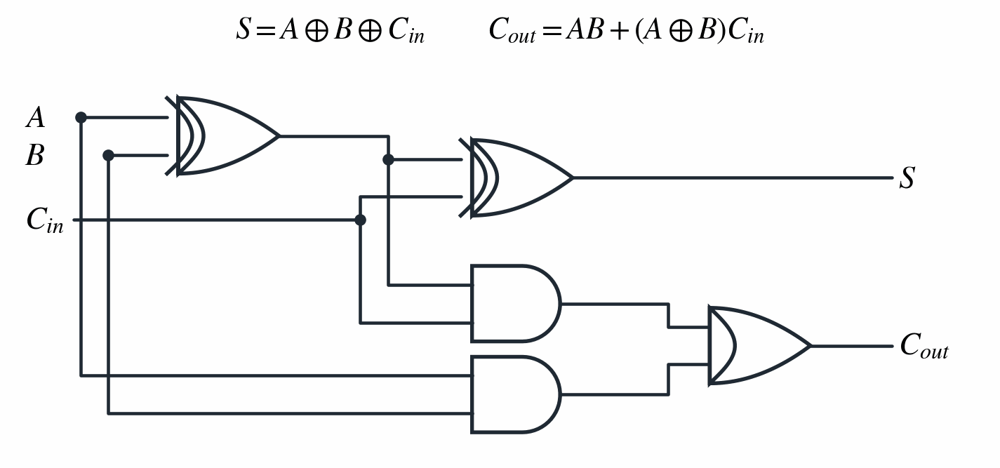
进位也可写成 ，即三输入多数函数。这把前面的表决电路与算术联系起来：三个输入中至少有两个一，就向高位产生一个进位。
以四位加法 为例。最低位一加一，和位零、进位一；次低位一加一再加进位一，和位一、进位一；第三位一加零再加一，和位零、进位一；最高位零加零再加一，和位一、进位零，最终得到 。若按无符号数解释，是七加三等于十；若按四位补码解释，七加三越过正数上界，属于有符号溢出。电路执行相同位运算，解释与溢出检测决定结果是否可接受。
逐位串接全加器形成行波进位加法器，低位产生的进位需要逐级传递。即使输入同时变化，最高位和也需等到进位链稳定。这解释了为什么算术电路不能只看布尔表达式，还要考虑传播延迟。超前进位等结构可减少等待，但需要更多逻辑资源，属于进一步的速度与规模折中。
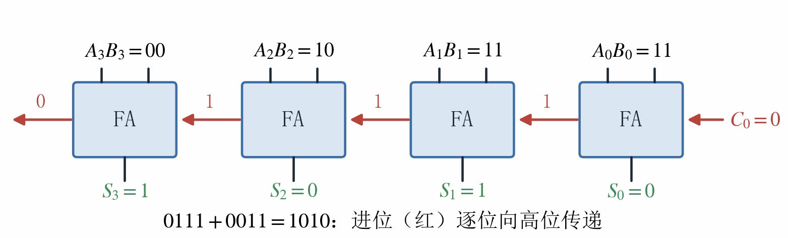
10. 真实门电路的时间行为
逻辑方程描述稳定值，真实电压变化需要时间。不同路径的延迟不同，就可能在输入变化时产生短暂毛刺。考虑 ，取 ，稳定时应恒有 。若 从一变零，第一条路径先关闭，反相路径稍后才打开，输出中间可能短暂跌到零，这就是静态一型冒险的一种情形。
增加冗余项 得 ，在 时第三项持续为一，可以覆盖上述单输入切换的空隙。冗余项不改变稳态真值表，却改变动态实现。这并非任何情形都能消除毛刺的保证：多个输入同时变化、更复杂多级结构和实际器件延迟仍需另行分析。
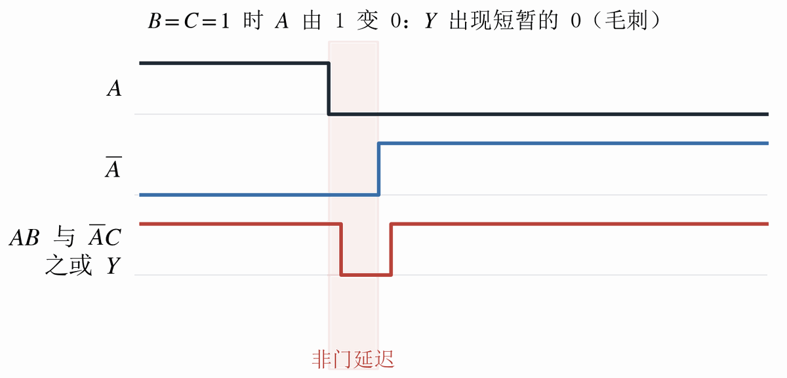
如果输出只在远离变化的时刻被同步寄存器采样，且所有建立时间等要求满足，某些组合毛刺可以被隔离；如果毛刺直接驱动时钟、异步复位或外部执行器，后果可能不同。因而电路结构与使用场景共同决定动态正确性。不能由“逻辑图没有反馈”推出“输出不会有毛刺”。
三态输出还有高阻状态，表示输出端暂时停止主动驱动，并不表示第三种布尔真值。总线可由多个三态输出共享，但同一时刻通常只能使能一个驱动源；否则一个输出高、另一个输出低，会发生电气冲突。高阻也不等于逻辑零，下级读到什么取决于其他驱动和上拉下拉。把状态抽象与实际连接区分开，才能避免仅凭逻辑表达式判断接线安全。
11. 存储、时钟与状态
组合电路的稳定输出由当前输入决定，存储电路则保留过去的信息。交叉耦合门可以形成两个稳定状态。对由或非门组成的高电平有效 SR 锁存器， 置位， 复位， 保持；同时置位与复位不是正常使用条件。若换成与非门结构，输入通常低电平有效，规则不能原样搬用。
锁存器在使能有效期间可能随输入变化，触发器则在指定时钟边沿采样。理想 D 触发器在有效边沿有 ，其他时间保持原状态。但真实器件要求输入在边沿前满足建立时间、边沿后满足保持时间，违反时序可能进入亚稳态或得到不确定结果，不能保证固定的零或一。
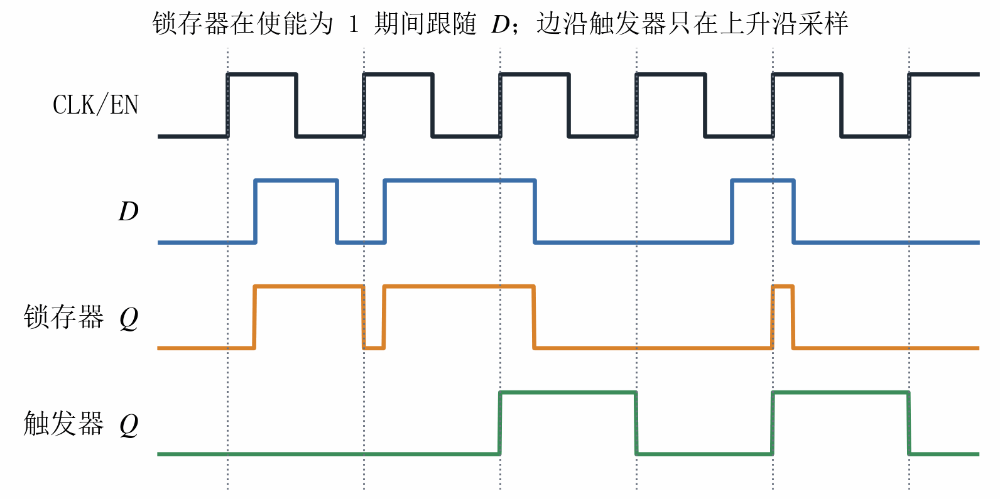
由多个 D 触发器组成寄存器，可在同一边沿保存一个多位字。例如四位输入 在时钟上升沿到来前已稳定，且满足建立保持要求，则边沿后经过时钟到输出延迟，寄存器输出更新为 。输入在两次边沿之间改成 ，输出仍保持，直到下一个有效边沿。
时序电路可写为下一状态函数与输出函数：
例如一个带使能的二位模四计数器，用整数状态 表示。当复位有效时置零；否则若使能为一，；若使能为零则保持。由此才进一步构造触发器输入逻辑。复位与使能同时有效时谁优先，属于功能定义，必须先规定再实现，不能让连线偶然决定。
同步时序还要给组合路径留足时间。最简单的同一时钟路径近似要求时钟周期不小于时钟到输出延迟、组合逻辑最大延迟与建立时间之和。保持时间约束主要与最短路径有关，不能只靠降低时钟频率解决。此处给出的是基本思路，实际系统还包括时钟偏斜和不确定性。写成公式，最小时钟周期和最高时钟频率为
保持时间的条件则是 。例如 、最长组合延迟 、建立时间 ，则最小周期为八纳秒，最高时钟频率为一百二十五兆赫。这些数值为示范。
用状态表示过去信息，可以设计一个逐位读取二进制串、判断目前一的个数是否为奇数的电路。状态 表示已读部分有偶数个一， 表示奇数个一。新输入 时奇偶性保持，新输入一时奇偶性翻转，故下一状态为 。一个异或门接到 D 触发器输入便可实现这一关系，初始状态复位为零。
从输入串 依次采样，状态从零变成一、一、零、一，因此最后报告奇数。若缺少初始复位，原有状态未知，后续结果也不能确定。这个电路存储的不是整个字符串，而是为判断任务保留的一个摘要状态；它说明状态的选择应服务于预测或决策所需信息，而非把全部历史原样复制。
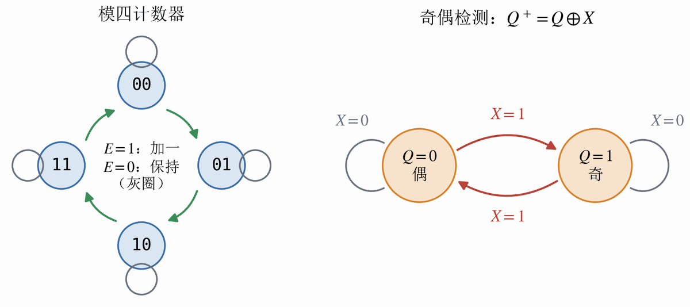
状态机设计通常先规定输入、状态含义、转移条件和输出时机，再编码状态、选择存储单元并形成组合逻辑。输出只由当前状态决定的结构与还依赖当前输入的结构，其对输入变化的即时响应不同。不能只看状态图上有几个圈，就断言需要同样多的触发器；若采用紧凑二进制编码， 个状态至少需要满足 的 位，而其他编码可能有意使用更多位以简化逻辑。
11.1 从 D 触发器扩展到 T、JK 与带使能存储
不同触发器只是用不同输入编码“下一状态怎样由当前状态改变”。以 Q 表示当前状态、 表示有效边沿后的状态，理想特征方程为
T=0 时保持，T=1 时翻转。JK 的 J、K 依次为00、01、10、11时，分别保持、复位、置位、翻转。最后一种是它与高电平有效 SR 锁存器非法输入情况的区别，不能把两者的输入表混在一起。
设计时序电路时，往往已知希望的状态变化 ，需要反过来求触发器的输入，这时使用激励表：
| 0 | 0 | 0 | ||
| 1 | 1 | 1 | ||
| 0 | 1 | 1 | ||
| 1 | 0 | 0 |
表中 表示取零取一都可以。例如 JK 触发器从零变到一，可以用置位（），也可以用翻转（），所以 任意。这些无关项在卡诺图化简时可以使电路更简单。
前面的特征方程可以直接导出 D 实现。例如希望带使能 E 的寄存器“E=0 保持、E=1 装入 X”，就应令
右侧恰为二选一选择器：使能零时把自身输出反馈至输入，使能一时选外部数据。若还要求同步高有效复位 R 优先，则 。这表示只有有效时钟边沿才执行复位；异步复位在边沿之外也可立即作用，不能仅靠改 D 输入表达。
讲解例：用 D 触发器构造两位模四计数。 无使能时，最低位 每个边沿翻转，最高位 只在当前 时翻转，因此
初始00，经边沿依次为01、10、11、00。两条 D 方程都使用边沿到来前的旧状态；不能先更新 ，再拿新 计算同一边沿的 ，否则模拟出了另一种电路。
加上计数使能 E 后，可以写 、。E=0 时两位保持，E=1 时回到上面的序列。采用 T 触发器则直接给 ，说明相同状态转移可以由不同存储单元实现。所有关系仍以满足实际时序条件为前提，并非瞬时电压的无延迟等式。
移位寄存器。 把若干 D 触发器首尾相连，前一级的输出接后一级的输入，共用一个时钟，就得到移位寄存器：每个时钟边沿，数据向后移动一位，、、，依此类推。它可以把串行输入的数据转换为并行输出，或者反过来，用于串行通信。把最后一级的输出接回第一级，就得到环形计数器；接回时先取反，得到扭环形计数器（约翰逊计数器）， 个触发器可以循环 个状态。
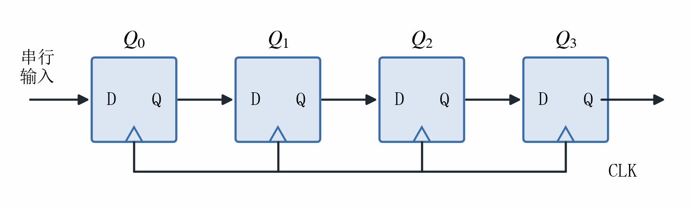
模 N 计数器。 计数到 后回到零的计数器，至少需要 个触发器，其中 。例如模十计数器需要四个触发器，十六个编码中只用十个，另外六个可以作为无关项化简，但设计时要检查电路万一进入这些无用状态后能否自动回到有效循环（称为自启动）。
设计同步时序电路的步骤是：
- 根据要求确定输入、输出，画出状态图或列出状态表，明确每个状态的含义。
- 合并等价状态（在任何输入下输出相同、转移到的状态也等价的状态）。
- 确定触发器的个数，给每个状态分配二进制编码。
- 列出状态转移表，由激励表求出各触发器的输入，用卡诺图化简得到输入方程，同时写出输出方程。
- 检查无用状态能否自启动，画出电路图。
- 从初始状态出发，逐个时钟检查状态序列和输出是否符合要求。
12. 课程联系与阅读范围
数制提供数值表示，编码提供解释规则，逻辑代数描述状态间的关系，组合电路实现当前输入的计算，存储和时钟则使计算具有历史。C 语言中的逻辑运算与位运算可以对应到这些概念，但要区分逻辑真假和多位数据的逐位操作，也不能由某段程序直接断言芯片内部只采用某一种具体门网络。
本册的已学依据是可读对话中的进制转换、逻辑门、等价变换、范式和完备基。加法器、选择器、译码器、时序与延迟是为贯通知识体系而补入的衔接内容，不表示这些全部已有完整课堂记录。
实际核读阎石《数字电子技术基础》第六版的书页4—5、21—24，并核看相关目录和电气符号页。原书从连续量与数字量、数制与编码进入，再用开关和灯说明与或非，随后给出真值表和门符号。本册依此采用“物理状态—逻辑条件—代数表达—电路实现”的讲授次序，避免直接堆列门的名称。书页与 PDF 页的偏移不同，核读范围在维护记录中另行注明；这里不声称逐页校勘整本原书。缺失图片中的具体接线或芯片型号不作为已经核实的事实。
下一册 · 俄语